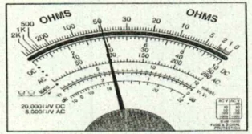

특별한국어능력시험문제(전기⦁전자제품제조업)
Q. 1. 300/500 V 기기 배선용 단심 비닐절연전선의 약호는?
① NRF
② CV
③ NRI
④ FTC
Right Ans:- ③ NRI
Q. 2. 줄(Joule)의 법칙에 의하여 전선에 전류가 흐르면 열이 발생한다. 줄의 법칙을 칼로리(cal)로 표현한 공식은?
① H=0.24I2Rt
② H=0.24AIRt
③ H=I2Rt
④ H=IRt
Right Ans:- ① H=0.24I2Rt
Q. 3. 전하의 이동을 전류라고 한다. 전류의 단위는 무엇인가?
① V
② A
③ W
④ Ω
Right Ans:- ② A
Q. 4. 전력케이블로 가장 많이 사용되고 있는 케이블은?
① NR
② NF
③ EV
④ CV
Right Ans:- ④ CV
Q. 5. 어느 두 점 사이를 5 c의 전하가 이동하여 외부에 대해 100 J의 일을 했다면, 두 점 사이의 전위차는 몇 V 인가?
① 10
② 20
③ 30
④ 40
Right Ans:- ② 20
Q. 6. 100 V의 전압을 인가할 때 10 A의 전류가 흐르는 전열기가 있다. 이 전열기의 전력 P(kW)는 얼마인가?
① 1
② 2
③ 3
④ 4
Right Ans:- ① 1
Q. 7. 100 V의 전압을 인가할 때 10 A의 전류가 흐르는 전열기가 있다. 이 전열기를 하루에 2시간씩 30일간 사용한다면, 이 전열기의 전력 P(kW) 및 30일간의 전력량(kWh)은 얼마인가?
① 4, 30
② 3, 40
③ 2, 50
④ 1, 60
Right Ans:-
Q. 8. 옴(Ohm’s)의 법칙은 “도체에 흐르는 전류는 인가된 전압에 반비례한다.” 이때의 비례상수를 저항이라 하고 R로 표시한다. 수식과 저항의 단위는?
① R=RV,A
② I=V/R,Ω
③ V=RI,V
④ V=I/R,Ω
Right Ans:- ② I=V/R,Ω
Q. 9. 220V인 선로에서 전선의 저항이 22Ω이면 이 선로에 흐르는 전류는 몇 A인가?
① 1
② 5
③ 10
④ 15
Right Ans:- ③ 10
Q. 10. 전선 재료로서 구비하여야 할 조건 중 틀린 것은?
① 도전율이 클 것
② 접속이 쉬울 것
③ 가요성이 풍부할 것
④ 인장강도가 비교적 적을 것
Right Ans:- ④ 인장강도가 비교적 적을 것
Q. 11. 케이블의 약호 표시 중 CV가 뜻하는 것은?
① 폴리에틸렌절연 부틸고무시스 케이블
② 비닐절연 가교폴리에틸렌시스 케이블
③ 클로로플렌고무절연 비닐시스 케이블
④ 가교폴리에틸렌절연 비닐시스 케이블
Right Ans:- ④ 가교폴리에틸렌절연 비닐시스 케이블
Q. 12. 전선을 자르거나 직각으로 구부릴 때 사용하며, 모든 작업시 항상 갖추고 있어야 하는 필수적인 기본공구가 아닌 것은?
① 펜치
② 니퍼
③ 스트리퍼
④ 롱노우즈
Right Ans:- ③ 스트리퍼
Q. 13. 작업을 완료한 후 회로를 정상적으로 결선하였는지 여부를 확인하기 위하여 사용 하는 공구는?
① 벨테스터
② 스트리퍼
③ 니퍼
④ 롱노우즈
Right Ans:- ① 벨테스터
Q. 14. 전선의 피복을 수직으로 벗기는데 편리한 공구는?
① 펜치
② 오리스트리퍼
③ 니퍼
④ 롱노우즈
Right Ans:- ② 오리스트리퍼
Q. 15. 형상에 따른 전선의 접속방법이 아닌 것은?
① 직선접속
② 분기접속
③ 종단접속
④ 박스접속
Right Ans:- ④ 박스접속
Q. 16. 전선을 직선 접속할 때 2.6 mm 이하의 단선에 적용하는 접속방법은?
① 브리타니어 직선접속
② 권선 직선접속
③ 트위스트 직선접속
④ 단권 직선접속
Right Ans:- ③ 트위스트 직선접속
Q. 17. “전선을 접속하는 경우에는 전선의 ( )을 증가시키지 않도록 접속하여야 하며, 전선의 세기를 ( ) % 이상 감소시키지 않아야 한다.”에서 ( ) 안에 들어갈 적합한 말은?
① 전류, 20
② 저항, 20
③ 전압, 10
④ 전력, 10
Right Ans:- ② 저항, 20
Q. 18. 와이어 커넥터를 이용한 접속 방법으로 적합하지 않은 것은?
① 외피는 자기소화성 난연 재질이다.
② 커넥터의 색상에는 황색, 적색, 청색, 회색이 있으며, 색상 별로 규격이 정해져 있다.
③ 커넥터 접속을 위하여 박스 내에서 전선의 여유는 5 ㎝ 정도 되도록 한다.
④ 접속하려는 전선의 심선이 2∼3 가닥인 경우, 전선의 피복을 10 mm 정도 벗기고 심선을 나란히 합쳐 소형 커넥터를 사용하여 접속한다.
Right Ans:- ③ 커넥터 접속을 위하여 박스 내에서 전선의 여유는 5 ㎝ 정도 되도록 한다.
Q. 19. 전선과 스터드 단자의 접속 방법으로 적합한 것은?
① 전선을 고리형으로 만들고 나사를 죄어 접속한다.
② 전선을 직접 밀어 넣고 나사를 죄어 접속한다.
③ 누름 금구가 있으면 전선에는 납땜을 하지 않아도 된다.
④ 압축 또는 납땜에 의해 전선과 접속한다.
Right Ans:- ④ 압축 또는 납땜에 의해 전선과 접속한다.
Q. 20. 아우트렛 박스에서 전등 선로를 연결하고 있다. 접속 재료로서 가장 적합한 것은?
① 비닐 테이블
② 압칙단자
③ 와이어 커넥터
④ 레이진
Right Ans:- ③ 와이어 커넥터
Q. 21. 전선 및 케이블의 중간 접속재로 사용되는 것은?
① 링 슬리브
② 압착 터미널
③ 와이어 커넥터
④ 칼 브럭
Right Ans:- ① 링 슬리브
Q. 22. 전선의 직선단자로 사용되는 금속 단자는?
① 링 슬리브
② 스터드 단자
③ 와이어 커넥터
④ 고리형 단자
Right Ans:- ② 스터드 단자
Q. 23. 분전함 내에 설치하는 수지제 덕트에 수납하기에 적합한 전선은?
① 와이어
② 코드
③ 케이블
④ 캡타이어 케이블
Right Ans:- ① 와이어
Q. 24. 합성수지관 공사에 적합한 전선은?
① 나전선
② 절연전선
③ 코드
④ 케이블
Right Ans:- ② 절연전선
Q. 25. 합성수지관 공사에서 배관의 지지는 몇 m 이하로 하여야 하는가?
① 0.5
② 1.0
③ 1.5
④ 2.0
Right Ans:- ③ 1.5
Q. 26. 합성수지관 및 금속관 공사에서 16 mm 라고 표기되어 있다. 무엇을 의미하는가?
① 두께 중심과 두께 중심의 사이
② 외경
③ 내경
④ 나사 피치와 피치 사이
Right Ans:- ③ 내경
Q. 27. 금속관을 사용할 때 케이블 피복 손상 방지용으로 사용되는 것은?
① 로크너트
② 커플링
③ 엘보
④ 부싱
Right Ans:- ④ 부싱
Q. 28. 금속관 공사의 인입구관 끝에 사용하는 재료는?
① 엔트런스 캡
② 링 리듀서
③ 엘보
④ 부싱
Right Ans:- ① 엔트런스 캡
Q. 29. 전선관 공사를 할 경우 경간이 너무 길거나 구부러지는 개소가 많아 배관 입선이 용이하지 않을 경우, 전선의 접속이 아닌 입선 목적에만 사용하는 중간박스는?
① 조인트박스
② 풀박스
③ 엘보
④ 부싱
Right Ans:- ② 풀박스
Q. 30. 전선관 공사를 할 경우 경간이 너무 길거나 구부러지는 개소가 많아 배관 입선이 용이하지 않을 경우 전선의 접속점을 만들어도 문제가 없는 경우에 사용하는 박스는?
① 엘보
② 풀박스
③ 조인트박스
④ 부싱
Right Ans:- ③ 조인트박스
Q. 31. 금속재 사다리형 전선 관로로서 천장으로부터 달대볼트로 행거를 설치, 행거 위에 고정시키거나 벽면에 가대를 하여 브라켓을 설치 ․ 사용하는 관로공사는?
① 플로어덕트 공사
② 금속덕트 공사
③ 버스덕트 공사
④ 케이블트레이 공사
Right Ans:- ④ 케이블트레이 공사
Q. 32. 케이블트레이 공사에 사용할 수 없는 전선은?
① HFIX
② FR-8
③ FR-3
④ F-CV
Right Ans:- ① HFIX
Q. 33. 주로 전기실, 발전기실 등의 일반인의 출입이 적은 실내에 사용되며, 바닥에 홈을 파고 홈에 덮개를 덮어 사용하는 관로공사는?
① 플로어덕트 공사
② 배선용피트 공사
③ 버스덕트 공사
④ 금속덕트 공사
Right Ans:- ② 배선용피트 공사
Q. 34. 실내의 변압기와 배전반 사이의 간선에서 분기접점이 없는 전선로에 사용하는 가장 적합한 덕트는?
① 트롤리 버스덕트
② 플러그인 버스덕트
③ 피더 버스덕트
④ 와이어덕트
Right Ans:- ③ 피더 버스덕트
Q. 35. 연질합성수지관으로서 가로등 배관 등 주로 지중 배관에 사용하는 전선관은?
① 금속 전선관
② 플렉시블 전선관
③ PVC 전선관
④ 폴리에틸렌(PE) 전선관
Right Ans:- ④ 폴리에틸렌(PE) 전선관
Q. 36. 지중전선관로의 허용전류를 결정할 때 기준온도는?
① 20 ℃
② 30 ℃
③ 40 ℃
④ 50 ℃
Right Ans:- ① 20 ℃
Q. 37. 금속덕트 공사의 지지점간의 거리는 몇 m 이하로 하여야 하는가?
① 1.5
② 3.0
③ 4.0
④ 5.0
Right Ans:- ② 3.0
Q. 38. 플로어덕트 공사의 시설방법으로 적합하지 않은 것은?
① 전선은 연선을 사용할 것.
② 전선은 절연전선을 사용할 것.
③ 전선은 옥외용 비닐 절연전선을 사용할 것.
④ 플로어덕트 안에는 전선에 접속점이 없도록 할 것
Right Ans:- ③ 전선은 옥외용 비닐 절연전선을 사용할 것.
Q. 39. 과전류차단기로서 배선용차단기(MCCB)에 대한 설명으로 적합한 것은?
① 정격전류에 1.25배의 전류로 자동적으로 즉시 동작할 것
② 정격전류에 2배의 전류로 융단 될 것
③ 정격전류에 1.1배의 전류에 견딜 것
④ 정격전류에 1배의 전류로 자동적으로 동작하지 아니할 것
Right Ans:- ④ 정격전류에 1배의 전류로 자동적으로 동작하지 아니할 것
Q. 40. 누전차단기(ELB)의 내부 구성요소가 아닌 것은?
① 동작부
② 검출부
③ 영상변류기
④ 차단부
Right Ans:- ① 동작부
Q. 41. 교류 또는 직류 전동기의 제어에 사용되는 것으로서 전자석의 흡입력을 이용하여 접촉부를 동작시키는 개폐기는?
① 배선용차단기(MCCB)
② 전자접촉기(MC)
③ 누전차단기(ELB)
④ 과전류계전기(OCR)
Right Ans:- ② 전자접촉기(MC)
Q. 42. 고압에 사용하는 퓨즈 중에서 포장퓨즈는?
① 실 퓨즈
② 훅 퓨즈
③ 통형 퓨즈
④ 판형 퓨즈
Right Ans:- ③ 통형 퓨즈
Q. 43. 3로 스위치 1개에는 몇 가닥의 전선이 필요한가?
① 6
② 5
③ 4
④ 3
Right Ans:- ④ 3
Q. 44. 단극 스위치인 경우 3구 스위치의 전선 가닥수는?
① 4
② 5
③ 6
④ 7
Right Ans:- ① 4
Q. 45. 변압기 2차 측에는 어떤 접지를 하여야 하는가?
① 제1종 접지공사
② 제2종 접지공사
③ 제3종 접지공사
④ 특별 제3종 접지공사
Right Ans:- ② 제2종 접지공사
Q. 46. 제1종 접지공사의 접지 저항치는 몇 오옴 이하이어야 하는가?
① 5 Ω
② 10 Ω
③ 30 Ω
④ 100 Ω
Right Ans:- ② 10 Ω
Q. 47. 특별 제3종 접지공사의 접지 저항치는 몇 오옴 이하이어야 하는가?
① 5 Ω
② 10 Ω
③ 30 Ω
④ 100 Ω
Right Ans:- ② 10 Ω
Q. 48. 피뢰설비에서 서지보호장치는 무엇인가?
① CB
② TR
③ SPD
④ L.A
Right Ans:- ③ SPD
Q. 49. 접지공사의 목적으로 적합하지 않은 것은?
① 감전 방지
② 이상전압의 억제
③ 전로의 대지전압 상승
④ 보호계전기의 동작확보
Right Ans:- ③ 전로의 대지전압 상승
Q. 50. 접지공사에 적용하는 접지선의 약호는?
① GV
② HIV
③ CV
④ EV
Right Ans:- ① GV
Q. 51. 1개의 전자가 가지고 있는 전기량[C]은?
① 1.602×10-19
② 9.109×10-31
③ 1.602×1019
④ 9.109×1031
Right Ans:- ① 1.602×10-19
Q. 52. 2[㎌]과 3[㎌]의 콘덴서 2개를 병렬로 연결하였다. 합성 정전 용량[㎌]은?
① 1.2
② 2
③ 3
④ 5
Right Ans:- ④ 5
Q. 53. 3[Ω]과 6[Ω]의 저항 2개를 병렬로 연결하였다. 합성 저항[Ω]은?
① 1.2
② 2
③ 3
④ 9
Right Ans:- ② 2
Q. 54 . 10-6 은 μ(micro)이다. 106의 기호는?
① k(kilo)
② T(tera)
③ M(mega)
④ P(peta)
Right Ans:- ③ M(mega)
Q. 55. 다음 그림은 회로 시험기(Tester)로 저항을 측정하였더니 측정된 눈금이다. 측정 단자를 ×10 단자에 선택을 하고 측정하였다면 저항값[Ω]은 얼마인가?

① 40
② 50
③ 400
④ 500
Right Ans:- ④ 500
Q. 56. 저항의 색상이 순서대로 노랑, 보라, 빨강 순으로 되어 있다면 이 저항의 저항값[Ω]은?
① 47
② 470
③ 4700
④ 47000
Right Ans:- ③ 4700
Q. 57. 콘덴서(condenser)의 종류 중 극성이 있는 것은?
① 세라믹 콘덴서
② 마일러 콘덴서
③ 전해 콘덴서
④ 종이 콘덴서
Right Ans:- ③ 전해 콘덴서
Q. 58. 다음 회로에서 R1=5[Ω], R2=5[Ω], R3=10[Ω]이다. 합성 저항[Ω]은?
① 10
② 12.5
③ 20
④ 250
Right Ans:- ② 12.5
Q. 59. 그림에서 C1=4[㎌], C2=6[㎌]이다. 합성 정전 용량[㎌]은?
① 2.4
② 4
③ 6
④ 10
Right Ans:- ① 2.4
Q. 60. 옥내 배선, 스위치 및 콘센트 등의 절연 저항을 측정할 경우는 모든 스위치를 열어 ( ㉠ )상태로 한 다음 ( ㉡ )를 이용하여 측정한다. 에서 ㉠, ㉡에 들어갈 말로 옳은 것은?
① ㉠ - 부하, ㉡ - 접지 저항계
② ㉠ - 부하, ㉡ - 절연 저항계
③ ㉠ - 무부하, ㉡ - 접지 저항계
④ ㉠ - 무부하, ㉡ - 절연 저항계
Right Ans:- ④ ㉠ - 무부하, ㉡ - 절연 저항계
Q. 61. 그림의 기호는 무엇을 의미하는가?
① 직류 전원
② 교류 전원
③ 접속
④ 접지
Right Ans:- ④ 접지
Q. 62. 그림의 기호는 무엇을 의미하는가?
① 배선용 차단기
② 누전 차단기
③ 분전반
④ 배전반
Right Ans:- ② 누전 차단기
Q. 63. 그림에서 R1=2[Ω], R2=5[Ω]이며, V=10[V]이다. R1에 흐르는 전류 I1은 몇 [A]인가?
① 2
② 3
③ 5
④ 7
Right Ans:- ③ 5
Q. 64. 교류의 1회 변화를 1사이클이라 하며, 1사이클 변화하는데 걸리는 시간을 주기라 한다. 또한 1초 동안에 반복되는 사이클의 수를 주파수라 하는데, 이 주파수의 단위는?
① [Hz]
② [A]
③ [V]
④ [Ω]
Right Ans:- ① [Hz]
Q. 65. 다음 중 고유 저항이 10-4 ~ 106[Ω․m]인 재료를 무엇이라 하는가?
① 도체
② 절연체
③ 반도체
④ 초전도체
Right Ans:- ③ 반도체
Q. 66. 전기 회로에서 전압과 전류를 측정하고자 전압계와 전류계를 연결하였다. 이 때, 전압계와 전류계의 연결 방법이 옳게 된 것은?
① 전압계-직렬, 전류계-병렬
② 전압계-병렬, 전류계-직렬
③ 전압계-병렬, 전류계-병렬
④ 전압계-직렬, 전류계-직렬
Right Ans:- ② 전압계-병렬, 전류계-직렬
Q. 67. 2전력계법에 의해 평형 3상 전력을 측정하였더니 전력계가 500[W], 1000[W]를 지시하였다. 이 때 소비전력[W]은?
① 500
② 1000
③ 1500
④ 2000
Right Ans:- ③ 1500
Q. 68. 전기 도면에서 그림과 같은 기호는 무엇을 나타내는가?
______________
① 천장 은폐 배선
② 바닥 은폐 배선
③ 노출 배선
④ 바닥 노출 배선
Right Ans:- ① 천장 은폐 배선
Q. 69. 전류가 1초 동안에 한 일을 무엇이라 하는가?
① 전압
② 저항
③ 임피던스
④ 전력
Right Ans:- ④ 전력
Q. 70. 전기 회로에서 저항의 양단에 전압을 가했을 때 흐르는 전류의 크기는 저항에 반비례하고 가해진 전압에 비례한다는 것은 어느 법칙인가?
① 주울의 법칙
② 오옴의 법칙
③ 키르히호프의 법칙
④ 패러데이의 법칙
Right Ans:- ② 오옴의 법칙
Q. 71. 그림과 같은 회로에서 양단에 100[V]를 공급하였다. 회로에 흐르는 전류[A]는 얼마인가?
① 1
② 2
③ 4
④ 10
Right Ans:- ③ 4
Q. 72. 3[Ω]과 6[Ω]를 병렬로 연결하고 20[V]의 전압을 가하였다. 이 때, 합성 저항과 전체 흐르는 전류[A]가 옳게 짝지어진 것은?
① 합성저항 : 2[Ω], 전류 : 10[A]
② 합성저항 : 3[Ω], 전류 : 6.6[A]
③ 합성저항 : 6[Ω], 전류 : 3.3[A]
④ 합성저항 : 9[Ω], 전류 : 2.2[A]
Right Ans:- ① 합성저항 : 2[Ω], 전류 : 10[A]
Q. 73. 콘덴서의 용량이 10[㎌], 15[㎌] 두 개가 있다. 이 두 콘덴서를 직렬로 연결하면 합성 정전 용량[㎌]은?
① 6
② 10
③ 15
④ 20
Right Ans:- ① 6
Q. 74. 다음 콘덴서 중 용량을 가변할 수 있는 것은?
① 전해 콘덴서
② 세라믹 콘덴서
③ 마일러 콘덴서
④ 바리콘(varicon)
Right Ans:- ④ 바리콘(varicon)
Q. 75. 콘덴서의 용량이 4[㎌], 6[㎌] 두 개가 있다. 이 두 콘덴서를 병렬로 연결하면 합성 정전 용량[㎌]은?
① 2.4
② 4
③ 6
④ 10
Right Ans:- ④ 10
Q. 76. 그림과 같은 기호는 무엇을 의미하는가?
① 다이오드(diode)
② 실리콘 제어 정류기(SCR)
③ 트랜지스터(transister)
④ 다이액(diac)
Right Ans:- ② 실리콘 제어 정류기(SCR)
Q. 77. 그림과 같은 기호는 어떤 게이트(Gate)를 의미하는가?
① AND
② NOT
③ OR
④ NAND
Right Ans:- ④ NAND
Q. 78. 콘덴서의 용량이 C이고 공급 전압이 V일 때 저장되는 정전 에너지(W)는 얼마인가?
① CV[J]
② 1/2CV[J]
③ 1/2CV2[J]
④ 1/2C2V[J]
Right Ans:- ③ 1/2CV2[J]
Q. 79. 같은 종류의 도선이라도 도선의 단면적이( ㉠ ) 단위 시간에 그 단면을 지나는 자유 전자의 수가 많아지므로 저항이 작아 전류가 잘 흐르고, 도선의 길이가 ( ㉡ ) 자유 전자가 원자들과 충돌하는 횟수가 많아지므로 저항이 커서 전류가 잘 흐르지 못한다. ( )안에 들어갈 말로 옳게 짝지어진 것은?
① ㉠ - 넓을수록, ㉡ - 길수록
② ㉠ - 넓을수록, ㉡ - 짫을수록
③ ㉠ - 작을수록, ㉡ - 길수록
④ ㉠ - 작을수록, ㉡ - 짫을수록
Right Ans:- ① ㉠ - 넓을수록, ㉡ - 길수록
Q. 80. 그림에서 C1= 10[㎌], C2=20[㎌], C3=30[㎌]일 때 합성 정전 용량[㎌]은?
① 11/60
② 60/11
③ 11
④ 60
Right Ans:- ② 60/11
Q. 81. 콘센트에 회로 시험기를 이용하여 교류 전압을 측정하였더니 실효값 200[V]를 지시하였다. 이 때, 최대값 [V]은 약 얼마인가?
① 110
② 200
③ 283
④ 380
Right Ans:- ③ 283
Q. 82. 그림에서 R1 =20[Ω], R2=30[Ω]이고, 전압 V=120[V]를 가하였다면 회로에 흐르는 전체 전류 I[A]는 얼마인가?
① 1
② 2
③ 5
④ 10
Right Ans:- ④ 10
Q. 83. 내부 저항이 0.1[Ω], 전압이 1.5[V]인 건전지 10개를 직렬로 연결한 후, 2[Ω]의 저항과 연결하였다. 흐르는 전류[A]는?
① 1
② 3
③ 5
④ 7
Right Ans:- ③ 5
Q. 84. 그림에서 3[Ω]에 흐르는 전류[A]는 얼마인가?
① 2
② 4
③ 6
④ 8
Right Ans:- ② 4
Q. 85. 그림은 계측기 눈금판의 기호이다. 다음 중에서 해당되는 것은?
① 유도형
② 전류력계형
③ 가동 코일형
④ 가동 철편형
Right Ans:- ④ 가동 철편형
Q. 86. 어느 콘덴서에 그림과 같이 적혀 있었다. 이 콘덴서의 용량[㎌]은?
① 10[㎌]
② 1[㎌]
③ 0.1[㎌]
④ 0.01[㎌]
Right Ans:- ④ 0.01[㎌]
Q. 87. 10[Ω]의 저항 5개를 병렬로 연결하였다. 합성 저항[Ω]은?
① 2
② 5
③ 10
④ 50
Right Ans:- ④ 50
Q. 88. 10[Ω]의 저항에 2.5[A]의 전류를 흐르게 하려면 몇[V]의 전압이 필요한가?
① 10
② 20
③ 25
④ 30
Right Ans:- ③ 25
Q. 89. 회로 시험기(Tester)를 이용하여 여러 가지 사항들을 측정하였다. 다음 중 직접적으로 측정할 수 없는 것은?
① 전압
② 전류
③ 전력
④ 저항
Right Ans:- ③ 전력
Q. 90. 3[Ω] 저항이 5개, 5[Ω] 저항이 5개, 10[Ω] 저항 2개를 전부 직렬로 연결하였다. 합성 저항[Ω]은?
① 20
② 40
③ 50
④ 60
Right Ans:- ④ 60
Q. 91. 다음 그림에서 R1=20[Ω], R2=30[Ω], R3=50[Ω], R4=100[Ω]이고 전압을 200[V] 인가하였다. R3에 걸리는 전압 V3[V]는?
① 20
② 30
③ 50
④ 90
Right Ans:- ③ 50
Q. 92. 전력량의 단위로 옳은 것은?
① [Wh]
② [V]
③ [A]
④ [W]
Right Ans:- ① [Wh]
Q. 93. 0.1[A]는 몇[㎃]인가?
① 10
② 100
③ 1000
④ 10000
Right Ans:- ② 100
Q. 94. C1과 C2의 직렬 회로에 V[V]의 전압을 가할 때 C1, C2에 걸리는 전압으로 옳은 것은?
①
②
③
④
Right Ans:- ②
Q. 95. 그림은 트랜지스터의 기호이다. 다음 중 해당되지 않는 것은?
① 캐소드(cathode)
② 이미터(emitter)
③ 베이스(base)
④ 컬렉터(collector)
Right Ans:- ① 캐소드(cathode)
Q. 96. 일반적으로 교류 회로의 전력은 평균 전력 P=VIcosθ[W]로 나타낸다. 여기서 cosθ가 의미하는 것은?
① 전압(voltage)
② 전류(electric current)
③ 역률(power factor)
④ 주파수(frequency)
Right Ans:- ③ 역률(power factor)
Q. 97. 호도법으로 [rad]를 도수법으로 환산하면 얼마인가?
① 30°
② 45°
③ 60°
④ 90°
Right Ans:- ② 45°
Q. 98. 그림의 회로에서 양단에 20[V]를 가하였다. 틀린 것은?
① 합성 저항 R0= 5[Ω]이다.
② 회로에 흐르는 전체 전류는 4[A]이다.
③ 10[Ω]에 흐르는 전류는 0.8[A]이다.
④ 2.5[Ω]에 흐르는 전류는 2.2[A]이다.
Right Ans:- ④ 2.5[Ω]에 흐르는 전류는 2.2[A]이다.
Q. 99. 그림의 기호는 전기 회로에서 무엇을 의미하는가?
① 직류 전원
② 교류 전원
③ 전동기
④ 발전기
Right Ans:- ② 교류 전원
Q. 100. 다음 중 저항의 종류로 옳지 않은 것은?
① 탄소 피막 저항기
② 솔리드 저항기
③ 금속 피막 저항기
④ 마일러 저항기
Right Ans:- ④ 마일러 저항기
Q. 101. 다음 중 원자의 기본구조가 아닌 것은?
① 분자
② 핵
③ 양자
④ 중성자
Right Ans:- ① 분자
Q. 102. 다음 중 단일 소자 반도체가 아닌 것은?
① 실리콘(silicon)
② 게르마늄(germanium)
③ 카본(carbon)
④ 동(copper)
Right Ans:- ④ 동(copper)
Q. 103. 다음 중 n형 반도체에서 5가 불순물 원자를 첨가하는 물질이 아닌 것은?
① 비소(As)
② 인(P)
③ 안티몬(Sb)
④ 알미늄(Al)
Right Ans:- ④ 알미늄(Al)
Q. 104. 다음 중 n형 반도체에 다수 캐리어(carrier)는 무엇인가?
① 전도전자
② 양자
③ 가전자
④ 정공
Right Ans:- ① 전도전자
Q. 105. 다음 중 LED(light emitting diode)의 역할은?
① 역방향 바이어스(bias)일 때 광을 방출한다.
② 역방향 바이어스(bias)일 때 광을 감지한다.
③ 순방향 바이어스(bias)일 때 광을 방출한다.
④ 순방향 바이어스(bias)일 때 광을 감지한다.
Right Ans:- ③ 순방향 바이어스(bias)일 때 광을 방출한다.
Q. 106. 다음 중 고주파에서와 고속 스위칭 응용에 사용되는 다이오드는?
① 레이저 다이오드(laser diode)
② 제너 다이오드(zener diode)
③ 터널 다이오드(tunnel diode)
④ 쇼트키 다이오드(schottky diode)
Right Ans:- ④ 쇼트키 다이오드(schottky diode)
Q. 107. 다음 중 부성저항 특성을 가진 다이오드는 어느 것인가?
① 터널 다이오드(tunnel diode)
② 제너 다이오드(zener diode)
③ 레이저 다이오드(laser diode)
④ 발광 다이오드(light emitting diode)
Right Ans:- ① 터널 다이오드(tunnel diode)
Q. 108. 다음 중 전압 안정화에서 제너다이오드의 음극은 정상적으로 어떻게 되는가?
① 양극보다 더 양이 된다.
② 양극보다 더 음이 된다.
③ +0.7V이다.
④ 정지된다.
Right Ans:- ① 양극보다 더 양이 된다.
Q. 109. 다음 중 역방향 전압에 따른 가변 정전용량 다이오드는?
① 버랙터 다이오드(varactor diode)
② 제너 다이오드(zener diode)
③ 레이저 다이오드(laser diode)
④ 발광 다이오드(light emitting diode)
Right Ans:- ① 버랙터 다이오드(varactor diode)
Q. 110. 다음 중 바이폴라 트랜지스터(bipolar transistor)의 3단자는?
① npn
② pnp
③ 입력, 출력, 접지
④ 이미터(emitter), 컬랙터(collector), 베이스(base)
Right Ans:- ④ 이미터(emitter), 컬랙터(collector), 베이스(base)
Q. 111. 다음 중 차단과 포화에서 동작될 때 트랜지스터(transistor)는 무엇처럼 동작하는가?
① 선형증폭기
② 가변용량
③ 가변저항
④ 스위치(switch)
Right Ans:- ④ 스위치(switch)
Q. 112. 다음 중 실리콘(silicon) BJT(bipolar transistor)의 순방향 바이어스(bias)된 베이스(base)이미터(emitter) 접합 양단 전압은?
① 0V
② 0.5V
③ 0.7V
④ 1.0V
Right Ans:- ③ 0.7V
Q. 113. 다음 중 트랜지스터(transistor)가 도통하지 않은 상태를 무엇이라 하는가?
① 차단(cut off)
② 포화(saturation)
③ 이득(gain)
④ 선형(linear)
Right Ans:- ① 차단(cut off)
Q. 114. 다음 중 트랜지스터(transistor) 베이스 바이어스(base bias)의 결점은?
① 매우 복잡하다.
② 이득을 낮게 만든다.
③ 큰 누설전류를 만든다.
④ 아주 β에 의존한다.
Right Ans:- ④ 아주 β에 의존한다.
Q. 115.다음 중 공통 베이스(base)증폭기의 입력저항은?
① 매우 높다.
② 매우 낮다.
③ 같다.
④ 무한대
Right Ans:- ② 매우 낮다.
Q. 116. 다음 중 다이리스터(thyristor)는 몇 개의 pn접합을 갖는가?
① 1개
② 2개
③ 3개
④ 4개
Right Ans:- ③ 3개
Q. 117. 다음 중 SCR(silicon-controlled rectifier)이 쇼클리 다이오드(shockley diode)와 다른 이유는 무엇인가?
① 강제적 전환
② 게이트(gate) 단자를 가짐
③ 4층 구조를 갖지 않음
④ 다이리스터(thyristor)가 아님
Right Ans:- ③ 4층 구조를 갖지 않음
Q. 118. 다음 중 광 SCR(silicon-controlled rectifier)은 무엇에 대해 반응하는가?
① 전류
② 전압
③ 습기
④ 빛
Right Ans:- ④ 빛
Q. 119. 다음 중 SCR(silicon-controlled rectifier)은 무엇인가?
① 저전력 소자
② 4층 다이오드(diode)
③ 고전류 소자
④ 양방향성
Right Ans:- ② 4층 다이오드(diode)
Q. 120. 다음 중 트라이액(triac)은 어떠한 소자인가?
① 양방향성 SCR(silicon-controlled rectifier)과 유사함
② 4단자 소자
③ 고전류 소자
④ 2층 다이오드(diode)
Right Ans:- ① 양방향성 SCR(silicon-controlled rectifier)과 유사함
Q. 121. 다음 중 트라이액(triac)에서 게이트(gate) 단자는 어떻게 구성되는가?
① 1개의 게이트만 있다.
② 3개의 게이트 단자가 있다.
③ 4개의 게이트 단자가 있다.
④ 공통게이트 단자가 있다.
Right Ans:- ④ 공통게이트 단자가 있다.
Q. 122. 다음 중 포토 트랜지스터(photo transistor)에서 베이스(base)전류는 어떻게 유지되는가?
① 바이어스(bias)전압에 의하여 유지
② 빛과 직접 비례하여 유지
③ 빛에 반비례하여 유지
④ 해당사항 없음
Right Ans:- ② 빛과 직접 비례하여 유지
Q. 123. 다음 중 UJT(unijunction transistor)의 특성이 아닌 것은 무엇인가?
① 부저항성
② 첨두점 전압
③ 양방향성 도통
④ 진성이탈비
Right Ans:- ③ 양방향성 도통
Q. 124. 다음 중 직접 회로(integrated circuit)의 특징으로 옳지 못한 것은?
① 소형이다.
② 경제적이다.
③ 신뢰성이 높다.
④ 모든 수동 소자의 직접이 가능하다.
Right Ans:- ④ 모든 수동 소자의 직접이 가능하다.
Q. 125. 다음 중 대규모 직접 회로(LSI : Large-Scale Intergrated)로 분류되는 것은?
① 직렬/병렬 입 ․ 출력 레지스터
② 십진 계수기
③ 마이크로프로세서(microprocessor)
④ 2진/16진 계수기
Right Ans:- ③ 마이크로프로세서(microprocessor)
Q. 126. 다음 중 이상적인 연산 증폭기(OP Amp)가 갖추어야 할 조건 중 옳지 못한 것은?
① 전압 이득이 무한대(Av= ∞)일 것
② 대역폭아 무한대(Bw = ∞)일 것
③ 오프 셋(off set) 전압이 1이어야 할 것
④ 입력 임피던스가 무한대일 것(R1 = ∞)
Right Ans:- ③ 오프 셋(off set) 전압이 1이어야 할 것
Q. 127. 다음 중 연산 증폭기(OP Amp)의 입출력 단자가 옳은 것은?
① 2개의 입력과 1개의 출력
② 1개의 입력과 2개의 출력
③ 1개의 입력과 1개의 출력
④ 2개의 입력과 2개의 출력
Right Ans:- ① 2개의 입력과 1개의 출력
Q. 128.다음 중 NAND게이트의 논리식은?
① A+B
② + B
③ A +
④ +
Right Ans:- ④ +
Q. 129. 다음 중 기본 논리식이 A○ ×B인 게이트(gate)는 무엇인가?
① AND
② EX-OR
③ NOR
④ OR
Right Ans:- ② EX-OR
Q. 130. 다음 중 Bool 대수가 틀린 것은?
① A + 1 = 1
② A▪0 = 0
③ A + A = A
④ A + = 0
Right Ans:- ④ A + = 0
Q. 131. 외부 전원이 반드시 필요한 마이크(Microphone)는?
① 다이나믹 마이크(Dynamic Microphone)
② 리본 마이크(Ribbon Microphone)
③ 콘덴서 마이크(Conderser Microphone)
④ 일렉트레이트 마이크(Electret Microphone)
Right Ans:- ③ 콘덴서 마이크(Conderser Microphone)
Q. 132. 다음 마이크(Microphone)중에서 특별한 주의가 필요하고 야외에서 사용하는데 적합하지 않은 마이크(Microphone)는?
① 리본 마이크(Ribbon Microphone)
② 다이나믹 마이크(Dynamic Microphone)
③ 일렉트레이트 마이크(Electret Microphone)
④ 콘덴서 마이크(Conderser Microphone)
Right Ans:- ① 리본 마이크(Ribbon Microphone)
Q. 133. 학교 강당에서 강연회를 확성할 경우에 어떠한 마이크(Microphone)를 사용하는 것이 적절한가?
① 헤미스페리칼(Hemispherical)
② 단일 지향 마이크(Uni-directional Microphone)
③ 무지향 마이크(Omni-directional Microphone)
④ 양지향 마이크(Bi-directional Microphone)
Right Ans:- ② 단일 지향 마이크(Uni-directional Microphone)
Q. 134. 스피커(Speaker) 품질에 영향을 주는 특성이 아닌 것은?
① 재생 주파수 대역
② 최대 출력 레벨
③ 임피던스(Impedance)
④ 진폭
Right Ans:- ④ 진폭
Q. 135. 스피커(Speaker)에 100W를 입력했을 때, 10m 지점에서 음압 레벨이 100dB이며 스피커(Speaker)의 감도는 얼마인가?
① 80dB
② 97dB
③ 100dB
④ 120dB
Right Ans:- ③ 100dB
Q. 136. 스피커(Speaker) 진동판에 의한 구분이 아닌 것은?
① 콘 스피커(Cone Speaker)
② 돔 스피커(Dome Speaker)
③ 리본 스피커(Ribbon Speaker)
④ 다이나믹 스피커(Dynamic Speaker)
Right Ans:- ④ 다이나믹 스피커(Dynamic Speaker)
Q. 137. 앰프(AMP) 회로 중에서 효율이 가장 좋은 것은?
① A급
② AB급
③ B급
④ C급
Right Ans:- ④ C급
Q. 138. 파워(POWER) 앰프(AMP) 모드 중에서 상대적으로 소비 전력이 가장 많은 것은?
① A급
② B급
③ AB급
④ C급
Right Ans:- ① A급
Q. 139. 앰프의 출력 임피던스가 0.5Ω이고, 스피커 임피던스가 10Ω이면 댐핑(damping factor, DF)은 얼마인가?
① 20
② 30
③ 40
④ 60
Right Ans:- ① 20
Q. 140. 음압 레벨(sound pressure level: SPL)의 단위는 무엇인가?
① W
② dB
③ phon
④ Hz
Right Ans:- ② dB
Q. 141. 다음 중 파장(λ), 주파수(f)와 음속(c)과의 관계를 나타내는 식은?
① λ = c/f
② λ = f/c
③ λ = c/f2
④ λ = f2/c
Right Ans:- ① λ = c/f
Q. 142. 다음 중 1초 동안에 반복되는 사이클(cycle)의 수를 무엇이라 하는가?
① 음속(sound speed)
② 파장(wave length)
③ 주파수(frequncy)
④ 음파(sound wave)
Right Ans:- ③ 주파수(frequncy)
Q. 143. 다음 중 CCTV(Closed Circuit Television)구성의 4대 원칙으로 정의할 때 구성요소가 아닌 것은?
① 촬영부
② 감시부
③ 전송부
④ 기록부
Right Ans:- ④ 기록부
Q. 144. 다음 중 CCTV(Closed Circuit Television) 카메라의 전송방식에 의한 분류가 아닌 것은?
① 무지향 신호전송
② 불평형 신호전송
③ 디지털(digital) 신호전송
④ 평형 신호전송
Right Ans:- ① 무지향 신호전송
Q. 145. 다음 중 불평형 통신기법으로 현재 많이 사용하는 유선 케이블(cable)은 어느 것인가?
① 근거리 통신망
② 전화망
③ 동축케이블
④ 트위스트 페어 케이블(twisted pair cable)
Right Ans:- ③ 동축케이블
Q. 146. 다음 중 고발포 케이블(cable)과 비교하여 ECX계열 동축케이블의 차이점으로 볼 수 없는 것은?
① 중심도선의 재질에 따른 저항에 많은 차이가 있다.
② 실드(shield)의 저항이 높다.
③ 기계적 강도가 약하다.
④ 절연 저항이 낮다.
Right Ans:- ④ 절연 저항이 낮다.
Q. 147. 다음 중 RS-232 EIA의 표준규격 통신에서 표준통신거리는 얼마인가?
① 15M
② 100M
③ 500M
④ 1200M
Right Ans:- ① 15M
Q. 148. 다음 중 통신방식에서 보내고 받는 것을 동시에 할 수 있는 방식은?
① 일방통신
② 반이중통신
③ 전이중통신
④ 무선통신
Right Ans:- ③ 전이중통신
Q. 149. 다음 중 순간 정전이 되거나 전력이 끊어지더라도 일정시간 동안 안정된 전력을 공급하는 장치는?
① 무정전 전원 공급기
② 자동 전압 조절기
③ 전연형 복권 트랜스
④ 전용 파워(POWER)
Right Ans:- ① 무정전 전원 공급기
Q. 150. 다음 중 TCP/IP를 이용한 CCTV 시스템 구현에서 필요 없는 장비는?
① 스위칭 허브(switching hub)
② 라우터(router)
③ 네트워크 카메라(network cameras)
④ 분배기(distributor)
Right Ans:- ④ 분배기(distributor)
Q. 151. 버스닥트의 종류에서 도중에 이동 부하를 접속할 수 있도록 만든 것은?
① 피더(Feeder)버스닥트
② 프러그인(Plug-in)버스닥트
③ 트롤리(Trolley)버스닥트
④ 프러그(Plug)버스닥트
Right Ans:- ③ 트롤리(Trolley)버스닥트
Q. 152. 케이블 트레이(Cable Tray) 부속자재가 아닌 것은?
① 레듀서(Reducer)
② 엘보(Elbow)
③ 라이자(Riser)
④ 커넥터(Connector)
Right Ans:- ④ 커넥터(Connector)
Q. 153. 합성수지제 가요전선관(CD)의 시공 시 주의 사항이 아닌 것은?
① 온도 변화에 따른 신축을 고려한다.
② 콘크리트에 매입될 때 건물의 강도를 감소시키지 않게 바닥 두께의 2/3 이상은 배관하면 안 된다.
③ 합성수지관은 지지점의 거리를 1.5[m] 이하로 한다.
④ 합성수지제 가요관의 상호간 접속은 직접 접속한다.
Right Ans:- ④ 합성수지제 가요관의 상호간 접속은 직접 접속한다.
Q. 154. 금속제 전선관(Conduit)의 시공 시 주의 사항이 아닌 것은?
① 콘크리트 강도를 유지하기 위해 배관을 2개 이하로 겹치게 한다.
② 전선관의 최소 곡률 반경은 관의 반지름의 6배 이상으로 한다.
③ 전선관을 직각으로 굴곡하는 장소를 5개소 이하로 한다.
④ 관의 길이가 30[m]을 넘을 때 박스를 사용한다.
Right Ans:- ③ 전선관을 직각으로 굴곡하는 장소를 5개소 이하로 한다.
Q. 155. 분기회로 산정 시 고려 사항이 아닌 것은?
① 전등과 콘센트 회로는 분리한다.
② 분기회로 전선의 길이는 전압 강하를 고려하여 20[m] 이하로 한다.
③ 같은 스위치로 점멸 되는 전등은 같은 회로로 한다.
④ 분기회로는 별도의 분기 차단기를 설치한다.
Right Ans:- ② 분기회로 전선의 길이는 전압 강하를 고려하여 20[m] 이하로 한다.
Q. 156. 감전 위험 요소가 아닌 것은?
① 통전전류의 크기
② 통전시간
③ 통전경로
④ 통전장소
Right Ans:- ④ 통전장소
Q. 157. 감전 현상이 아닌 것은?
① 호흡정지
② 심장마비
③ 근육이완
④ 추락
Right Ans:- ③ 근육이완
Q. 158. 전기감전에서 통전경로별 위험도가 가장 큰 것은?
① 왼손-가슴
② 오른손-가슴
③ 양손-양발
④ 왼손-오른손
Right Ans:- ① 왼손-가슴
Q. 159. 우리나라는 몇[V]를 안전전압으로 규정하는가?
① 10
② 20
③ 30
④ 40
Right Ans:- ③ 30
Q. 160. 누전차단기를 설치하는 목적이 아닌 것은?
① 감전보호
② 누전화재 보호
③ 전기설비 및 전기기 보호
④ 절연보호
Right Ans:- ④ 절연보호
Q. 161.케이블을 나선형으로 꼬아 놓은 형태이며, 전자기 간섭을 막기 위한 별도의 피복이 없는 전선은?
① UTP(unshielded twisted pair)
② FTP(foiled twisted pair)
③ STP(shielded twisted pair)
④ FSTP(foiled shielded twisted pair)
Right Ans:- ① UTP(unshielded twisted pair)
Q. 162. 전체 케이블에 피복을 씌운 케이블의 명칭은?
① UTP(unshielded twisted pair)
② FTP(foiled twisted pair)
③ STP(shielded twisted pair)
④ FSTP(foiled shielded twisted pair)
Right Ans:- ② FTP(foiled twisted pair)
Q. 163. 전체 케이블에 피복을 씌우고 각각의 나선형 케이블 쌍에도 피복을 씌운 케이블의 명칭은?
① UTP(unshielded twisted pair)
② FTP(foiled twisted pair)
③ STP(shielded twisted pair)
④ FSTP(foiled shielded twisted pair)
Right Ans:- ③ STP(shielded twisted pair)
Q. 164. 카테고리 4의 통신용량은?
① 4Mbps
② 10Mbps
③ 16Mbps
④ 100Mbps
Right Ans:- ③ 16Mbps
Q. 165. 카테고리 5의 통신용량은?
① 4Mbps
② 10Mbps
③ 16Mbps
④ 100Mbps
Right Ans:- ④ 100Mbps
Q. 166.광대역 동축 케이블(broadband coaxial cable)의 저항 값[Ω]은 얼마인가?
① 35
② 45
③ 55
④ 75
Right Ans:- ④ 75
Q. 167. 기저 대역 동축 케이블(baseband coaxial cable)의 저항 값[Ω]은 얼마인가?
① 30
② 40
③ 50
④ 70
Right Ans:- ③ 50
Q. 168. 동축 케이블(coaxial cable)의 특징이 아닌 것은?
① 대역폭이 넓다.
② 전송 속도가 빠르다.
③ 전기적 간섭이 적다.
④ 이중 나선 케이블에 비하여 가격이 비싸고 설치가 쉽다.
Right Ans:- ④ 이중 나선 케이블에 비하여 가격이 비싸고 설치가 쉽다.
Q. 169. 동축 케이블의 용도가 아닌 것은?
① 광대역 전송로로 사용된다.
② 장거리 전화 및 TV전송
③ TV 신호 분배
④ 장거리 시스템 링크
Right Ans:- ④ 장거리 시스템 링크
Q. 170. 광섬유 케이블(optical fiber cable)의 특징이 아닌 것은?
① 대역폭이 넓다.(3.3[GHz])
② 외부 간섭에 전혀 영향을 받지 않는다.
③ 네트워크 보안성이 크다.
④ 데이터 전송속도는 100[Gbps]정도이다.
Right Ans:- ④ 데이터 전송속도는 100[Gbps]정도이다.
Q. 171. 광섬유 케이블(optical fiber cable)의 특징이 아닌 것은?
① 설치 시 고도의 기술이 필요하다.
② 고속데이터 전송과 원거리 전송에 사용된다.
③ 싱글모드는 20[km]까지 전송할 수 있다.
④ 멀티모드는 20[km]까지 전송할 수 있다.
Right Ans:- ④ 멀티모드는 20[km]까지 전송할 수 있다.
Q. 172. 정보 전송방식이 아닌 것은?
① 단방향(simplex)통신 방식
② 반이중(half duplex)통신 방식
③ 전이중(full duplex)통신 방식
④ 장 방향(long)통신 방식
Right Ans:- ④ 장 방향(long)통신 방식
Q. 173.정보전송에서 직렬 전송 방식의 특징이 아닌 것은?
① 전송속도가 느리다.
② 전송로 비용이 저렴하다.
③ 원거리 전송에 사용된다.
④ 직․병렬 변환회로가 필요 없다.
Right Ans:- ④ 직․병렬 변환회로가 필요 없다.
Q. 174.정보전송에서 병렬 전송 방식의 특징이 아닌 것은?
① 전송속도가 빠르다.
② 전송로 비용이 비싸다.
③ 원거리 전송에 사용된다.
④ 직․병렬 변환회로가 필요 없다.
Right Ans:- ③ 원거리 전송에 사용된다.
Q. 175.네트워크 사용의 장점이 아닌 것은?
① 네트워크 관리자가 분산된 시스템을 한 위치에서 중앙 제어할 수 있다.
② 원하는 자료를 공유할 수 있다.
③ 원격지에 있는 자원을 사용할 수 없다.
④ 프린터나 스캐너 같은 고가의 장비를 여러 사용자가 공유하여 사용함으로써 최소의 비용으로 최대의 효과를 누릴 수 있다.
Right Ans:- ③ 원격지에 있는 자원을 사용할 수 없다.
Q. 176. 사무실, 학교 등의 일정 지역 내에 분산 되어 있는 주변기기, 워크스테이션 등의 자원을 서로 연결하여 정보를 전송, 저장, 처리하는 통신망으로 약 10[km]거리 내 에서 10[Mbps]정도의 전송속도를 가지는 통신방식은?
① LAN
② WAN
③ MAN
④ VAN
Right Ans:- ① LAN
Q. 177. 정보의 전송교환 방식이 아닌 것은?
① 회선교환(circuit switching)
② 메시지 교환(message switching)
③ 패킷 교환(packet switching)
④ 다중교환(multiple switching)
Right Ans:- ④ 다중교환(multiple switching)
Q. 178. 주로 전화선이나 근거리 통신망에 사용되는 전선은?
① UTP(unshielded twisted pair)
② Coaxial Cable
③ STP(shielded twisted pair)
④ Optical Fiber Cable
Right Ans:- ① UTP(unshielded twisted pair)
Q. 179.토큰링(Token-ring)형 근거리 통신망에 주로 사용되는 통신망은?
① UTP(unshielded twisted pair)
② Coaxial Cable
③ STP(shielded twisted pair)
④ Optical Fiber Cable
Right Ans:- ③ STP(shielded twisted pair)
Q. 180. 트위스트 페어(twisted pair) 케이블이나 동축케이블(Coaxial Cable)과 비교할 때 광케이블(Optical Fiber Cable)의 특징이 아닌 것은?
① 넓은 대역폭
② 작은 크기와 적은 무게
③ 보다 큰 감쇄도 및 넓은 리피터 설치 간격
④ 전자기적 격리
Right Ans:- ③ 보다 큰 감쇄도 및 넓은 리피터 설치 간격
Q. 181. 정보 형태에 따른 정보 통신 서비스가 아닌 것은?
① 음성 통신
② 데이터 통신
③ 화상 통신
④ E-mail 서비스 통신
Right Ans:- ④ E-mail 서비스 통신
Q. 182. 정보통신 표준화 기구가 아닌 것은?
① ISO
② ITU-T
③ IEEE
④ ANCI
Right Ans:- ④ ANCI
Q. 183. 정보 통신망 토폴리지(Topology) 방식 중 성(Star)형의 장점이 아닌 것은?
① 보수와 관리가 용이하다.
② 전송제어 기능이 간단하다.
③ 각 단말의 전송속도에 차이를 줄 수 있다.
④ 통신망의 구성이 복잡하나 견고하다.
Right Ans:- ④ 통신망의 구성이 복잡하나 견고하다.
Q. 184. 정보 통신망 토폴리지(Topology) 방식 중 링(Ring)형의 장점이 아닌 것은?
① 공평한 통신망 서비스를 받을 수 있다.
② 통신회선이 장애가 날 때 융통성을 가질 수 있다.
③ 양방향의 데이터 전송이 가능하다.
④ 전체적인 통신 처리량이 증가한다.
Right Ans:- ④ 전체적인 통신 처리량이 증가한다.
Q. 185. 정보 통신망 토폴리지(Topology) 방식 중 링(Ring)형의 단점이 아닌 것은?
① 단말기 증가가 어렵다.
② 전체적인 통신처리량이 증가한다.
③ 하나의 단말고장이 전체의 통신망에 영향을 준다.
④ 통신망의 구성이 복잡하다.
Right Ans:- ④ 통신망의 구성이 복잡하다.
Q. 186. 정보 통신망 토폴리지(Topology) 방식 중 버스(Bus)형의 장점이 아닌 것은?
① 통신회선이 1개이므로 물리적 구조가 간단하다.
② 단말의 증가와 삭제가 용이하다.
③ 단말의 고장이 통신망 전체에 영향을 주지 않으므로 통신망의 신뢰성을 높일 수 있다.
④ 방송모드이므로 경로 제어가 필요하다.
Right Ans:- ④ 방송모드이므로 경로 제어가 필요하다.
Q. 187. 정보 통신망 토폴리지(Topology) 방식 중 버스(Bus)형의 단점이 아닌 것은?
① 기밀 보장이 어렵다.
② 노드수가 많아지면 망의 부하가 커져 성능이 저하한다.
③ 통신제어 기능을 가지므로 처리량이 증가한다.
④ 중앙 제어형에서는 우선순위 제어가 어렵다.
Right Ans:- ④ 중앙 제어형에서는 우선순위 제어가 어렵다.
Q. 188. 정보 통신망 토폴리지(Topology) 방식 중 모든 데이터가 제어 노드를 중심으로 라우팅되므로 중개 과정이 간단한 정보 통신망은?
① 트리(Tree)형
② 그물(Mesh)형
③ 버스(Bus)형
④ 망(Ring)형
Right Ans:- ① 트리(Tree)형
Q. 189. 정보 통신망 토폴리지(Topology) 방식 중 중앙호스트에 문제가 발생하면 전체 네트워크의 동작에 영향을 많이 주는 정보통신 방식은?
① 트리(Tree)형
② 그물(Mesh)형
③ 버스(Bus)형
④ 망(Ring)형
Right Ans:- ① 트리(Tree)형
Q. 190 . 정보통신망의 이용 분야가 아닌 것은?
① 정보 검색
② 금융 서비스
③ 고속 로밍 기능
④ E-mail
Right Ans:- ③ 고속 로밍 기능
Q. 191. 통신망 아키텍쳐(Network Architecture)의 목적이 아닌 것은?
① 집중된 컴퓨터나 단말간의 정보교환
② 컴퓨터 자원의 공동이용
③ 컴퓨터 시스템의 신뢰성 향상
④ 분산처리에 따른 비용 성능비의 향상
Right Ans:- ① 집중된 컴퓨터나 단말간의 정보교환
Q. 192 . 정보전송 기술에서 신호선과 공통접지선 4개로 구성된 통신회선은?
① 2선식
② 4선식
③ 6선식
④ 8선식
Right Ans:- ① 2선식
Q. 193. 통신회선의 접속 방식이 아닌 것은?
① 점-대-점 방식(Point-to-point)방식
② 단방향 전송(Simplex)방식
③ 집선(Concentration)방식
④ 다중화(Multiplexing)방식
Right Ans:- ② 단방향 전송(Simplex)방식
Q. 194. 핸드폰, PDA, 노트북과 같은 정보기기들 간의 양방향 근거리 통신이 가능하며 전송거리는 10~100[m] 까지 가능한 것은?
① Bluetooth
② Zigbee
③ UWB
④ IrDA
Right Ans:- ① Bluetooth
Q. 195. UWB(Ultra Wide Band)의 기술적 특징이 아닌 것은?
① 고속 전송의 실현
② 극히 짧은 펄스를 이용한 송수신
③ Channel Capacity
④ 기존 협대역 시스템의 공유
Right Ans:- ① 고속 전송의 실현
Q. 196. 무선통신 기술에서 셀룰라 엔지니어링의 특징이 아닌 것은?
① 이동체가 교환기의 특정 단자에 수용되지 않으므로 경로 선택에 특별한 기능이 필요하다.
② 사용되는 주파수대가 한정되어 있지 않기 때문에 주파수를 효율적으로 이용하여 가입자 수용 용량을 증대시킬 수 있다.
③ 무선통신 방식이므로 페이딩을 극복하는 방식 및 제어 프로토콜이 필요하다.
④ 회선을 다수의 이용자가 공용하고 있고 또 이용자가 이동하고 있으므로 이동측의 호출 그리고 통화료 부과 등에 일반전화와 다른 기술이 필요하다.
Right Ans:- ② 사용되는 주파수대가 한정되어 있지 않기 때문에 주파수를 효율적으로 이용하여 가입자 수용 용량을 증대시킬 수 있다.
Q. 197. 무선통신 기술에서 무선망과 인터넷이 통합되어 언제 어디서든지 자유로이 인터넷을 이용할 수 있는 것은?
① UWB
② WiBro
③ Bluetooth
④ Zigbee
Right Ans:- ② WiBro
Q. 198. GPS 위성을 사용한 동기화 방식을 사용하는 비동기식은 위성을 이용하지 않고 기지국과 중계국간 동기화를 통해 데이터를 송수신하는 것은?
① IMT 2000 동기식
② 뮤선 LAN
③ Bluetooth
④ Zigbee
Right Ans:- ① IMT 2000 동기식
Q. 199. WCDMA와 cdma2000으로 대별되는 3G 이동 통신과 4G 이동통신의 중간에 해당되는 기술은?
① LTE(Long Term Evolution)
② HAR(Home Location Register)
③ AMC(Adaptive Modulation and Coding)
④ H-ARQ(Hybrid-ARQ)
Right Ans:- ① LTE(Long Term Evolution)
Q. 200. 무선통신 기술에서 전송할 때 여러 개의 안테나에 서로 다른 데이터를 보내고 수신단에서 서로 다른 안테나로 전송된 데이터를 통해 무선 채널 특성을 찾아내어 분리하는 것을 특징으로 하는 것은?
① MIMO(Multiple Input Multiple Output)
② LTE(Long Term Evolution)
③ HAR(Home Location Register)
④ AMC(Adaptive Modulation and Coding)
Right Ans:- ① MIMO(Multiple Input Multiple Output)